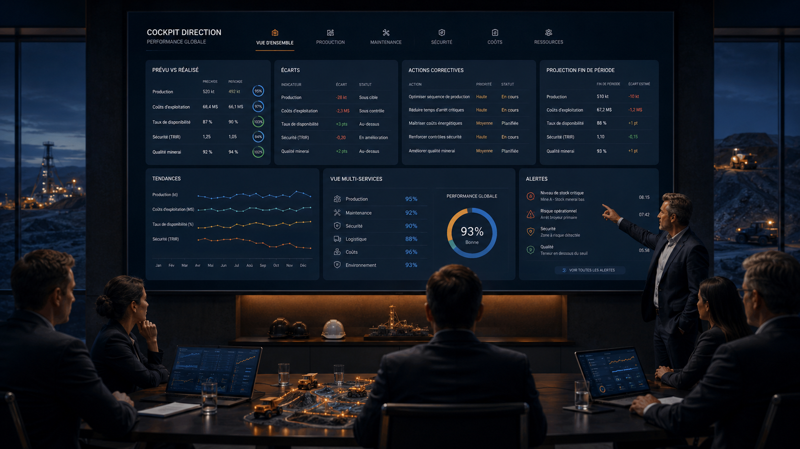

Démarrer simple
Identifier un périmètre pilote clair et les indicateurs vraiment utiles.
Offres
Des offres progressives pour structurer vos données terrain, fiabiliser vos KPI et mettre en place un cockpit Direction exploitable.
L’accompagnement peut démarrer par un diagnostic simple, puis évoluer vers des tableaux de bord, des interfaces de saisie par rôle, l’intégration de systèmes existants et une plateforme complète de pilotage opérationnel.
Une approche progressive
L’objectif est de construire une trajectoire réaliste : démarrer simple, sécuriser les données, construire les KPI prioritaires, digitaliser progressivement, puis connecter les systèmes et capteurs selon la maturité de l’entreprise.
Identifier un périmètre pilote clair et les indicateurs vraiment utiles.
Contrôler les sources, formats, règles de saisie et incohérences critiques.
Prioriser les indicateurs qui éclairent le prévu, le réalisé et les écarts.
Mettre en place les interfaces terrain, validations et tableaux de bord par service.
Préparer les connexions systèmes et capteurs via passerelles, API ou flux contrôlés.
Niveaux d’accompagnement
Chaque offre peut être utilisée seule ou comme étape d’une trajectoire plus complète, selon vos priorités, vos données disponibles et votre niveau de maturité digitale.
Analyser l’existant, les fichiers, les processus, les données et les indicateurs prioritaires.
Livrable : Rapport de diagnostic + plan d’action KPI.
Créer des interfaces simples par rôle pour fiabiliser la remontée des données terrain.
Livrable : Pages de saisie métier prêtes à utiliser.
Créer des tableaux de bord par service pour suivre la performance réelle.
Livrable : Tableaux de bord opérationnels par service.
Consolider les indicateurs critiques dans une vision Direction claire.
Livrable : Cockpit Direction exploitable pour réunion et arbitrage.
Préparer l’intégration progressive des systèmes existants et données automatiques.
Livrable : Plan d’intégration technique + prototypes de flux si applicable.
Mettre en place une solution centralisée pour connecter terrain, services et Direction.
Livrable : Plateforme de pilotage opérationnel progressive.
Cockpit Direction
Vision consolidée pour arbitrage, suivi des écarts, alertes et projection fin de période. Le cockpit Direction doit rendre les décisions plus lisibles sans surcharger les équipes.

Quel niveau choisir ?
| Votre situation | Offre recommandée |
|---|---|
| Vous avez surtout des fichiers dispersés. | Diagnostic digital & KPI |
| Vous voulez fiabiliser la saisie terrain. | Digitalisation des saisies terrain |
| Vous voulez suivre vos KPI par service. | Dashboards opérationnels |
| Vous voulez une vision Direction. | Cockpit Direction |
| Vous voulez connecter systèmes/capteurs. | Connexion systèmes & capteurs |
| Vous voulez remplacer progressivement les suivis dispersés. | Plateforme complète |
Modalités
Choisir la bonne offre
Le meilleur point de départ est un diagnostic de vos données, vos processus et vos indicateurs prioritaires.